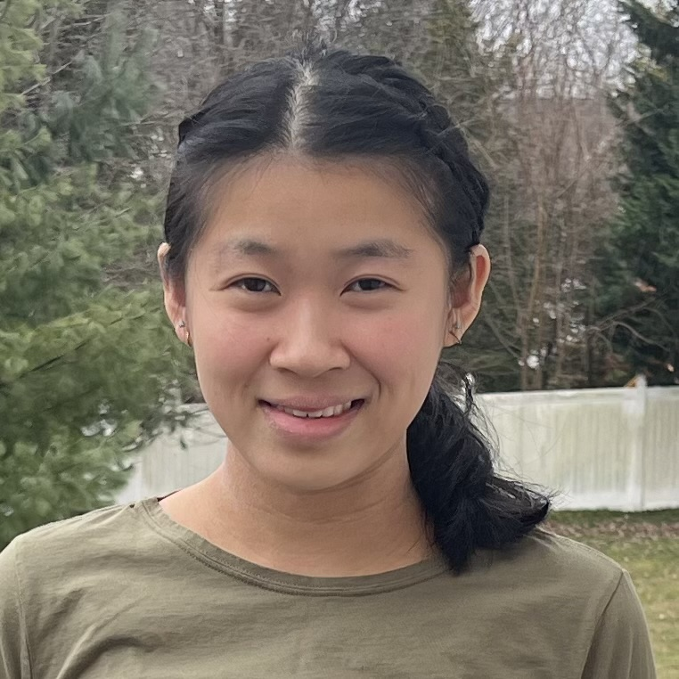

I am a research scientist at FAIR, Meta Superintelligence Labs, working on RL post-training for image-to-code, OCR, and chart reasoning capabilities. I completed my PhD in Computer Science at the University of Massachusetts Amherst in May 2025 and was advised by Prof. Brendan T. O'Connor. I was a member of UMass NLP and the Statistical Social Language Analysis lab. My work on knowledge graphs, natural language processing, computational social science, causal structural learning, and causal inference is in Research.
From Fall 2023 through Spring 2025, I worked part-time at MIT Lincoln Laboratory, where I also interned during the summers. Prior to graduate school, I completed my undergraduate studies in Computer Science at Rutgers University in 2020, where I worked with Prof. Eric Allender in computational complexity theory and with Prof. Janne Lindqvist in developing methods to explore the privacy and security of ephemeral messages.
In my free time, I play tennis and play the piano, and like to travel.
